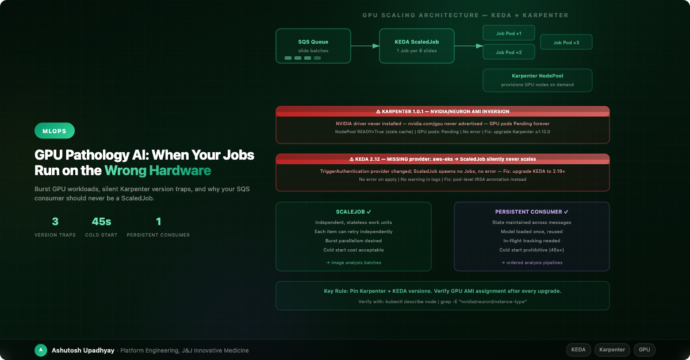

Burst GPU workloads, silent Karpenter version traps, and why your SQS consumer should never be a ScaledJob.
Our digital pathology AI pipeline was running smoothly. Whole-slide images arrived in batches of eight, a KEDA ScaledJob spawned inference pods on demand, Karpenter provisioned GPU nodes within two minutes, and results streamed back to researchers. Then we upgraded Karpenter to 1.0.1.
No job completed. GPU pods sat Pending indefinitely. No error, no failed pod, no alarm. A researcher noticed after 45 minutes that their analysis hadn't come back.
We checked the NodePool status: READY=True. We checked the EC2NodeClass: READY=True. Everything looked healthy. Then we looked at the operator logs — the controller had been logging a reconcile failure every 60 seconds, invisible to kubectl get. Karpenter 1.0.1 had inverted the AMI selection logic for AL2023: GPU instances were being provisioned with the Neuron AMI variant instead of the NVIDIA one. The NVIDIA driver never installed. The NVIDIA device plugin never started. nvidia.com/gpu was never advertised as an allocatable resource. The scheduler had nothing to schedule onto, so GPU pods waited forever.
The real lesson wasn't "CUDA calls fail on wrong hardware." It was: READY=True on the NodePool does not mean the GPU resource is allocatable. Status fields reflect the controller's last cached observation, not live device state.
That was the first of three version traps we hit over six months of running GPU workloads for AI image analysis at scale. This is what we learned.
Whole-slide image analysis is one of the most demanding workloads in biomedical AI. A single slide can be 50,000 × 50,000 pixels or more. Tissue segmentation, cell classification, and spatial phenotyping require GPU-accelerated inference with multi-gigabyte models loaded into VRAM. And the workload is inherently bursty: a pathologist submits ten slides at 09:00, needs results before lunch, then the queue is empty for hours.
Standard Kubernetes Deployments are the wrong tool here. Keeping a GPU node running 24/7 for a workload that's active three hours per day is expensive — a g5.xlarge (1× A10G) runs around $1/hr on-demand — and you're paying that around the clock for a workload that only uses it a few hours a day. On the other hand, the cold start time for spinning up a new node, pulling a 5GB image, and loading the model into GPU memory is 45–90 seconds. That's acceptable once per batch; it's not acceptable if it happens per message.
KEDA ScaledJobs solve the first problem elegantly: create one Kubernetes Job per N queue messages, let it run, let Karpenter deprovision the node when it's done. But ScaledJobs come with constraints that aren't obvious until you hit them in production.
KEDA offers two scaling primitives for queue-driven work: ScaledObject (scales a Deployment) and ScaledJob (creates Jobs on demand). ScaledJob looks attractive for GPU workloads because it truly scales to zero. But there's a decision that matters more than which primitive you choose: is each unit of work independent?
| Criterion | ScaledJob ✓ | Persistent Consumer ✓ |
|---|---|---|
| Work unit independence | Each item retries independently | State maintained across messages |
| Model loading cost | Cold start per batch is acceptable | Model loaded once, amortized across many messages |
| Ordering requirements | None — parallel execution fine | Ordered or sequential processing needed |
| In-flight tracking | SQS visibility timeout is enough | Complex in-flight state requires persistent consumer |
| Burst pattern | True burst: idle for hours, then peak | Steady moderate load |
| Best for | Parallel image inference batches | Ordered analysis pipelines with model state |
For our image classification workload — stateless, parallelizable, GPU burst — ScaledJob was correct. For a separate downstream analysis pipeline that processed results in sequence and maintained state across slides in the same study, a persistent Deployment consuming SQS with an extended visibility timeout was the right answer.
The rule: If each work item is fully independent and can be retried by re-processing the message from scratch, use ScaledJob. If the consumer maintains any state across messages — a loaded model, an ordered cursor, an in-progress accumulation — use a persistent Deployment with a long visibility timeout (set to 2× your expected processing time and extend it during processing).
The mistake we almost made: using ScaledJob for the downstream pipeline because "it scales to zero." A ScaledJob that spawns one pod per message, each loading a 3GB model from scratch, would have spent 45 seconds per slide loading the model and 8 seconds running inference. The persistent consumer loads the model once and processes the entire batch in 8 seconds per slide. The apparent simplicity of ScaledJob would have cost 5× in runtime.
This was the incident that opened this post. Let's be precise about what happened.
Karpenter determines which AMI variant to use based on the amiFamily and instance type. For AL2023, GPU instances should get the NVIDIA variant; AWS Inferentia instances should get Neuron. In Karpenter 1.0.1, this variant selection was inverted for AL2023. GPU nodes booted with the Neuron AMI — which ships with the AWS Neuron runtime, not the NVIDIA driver. The device plugin never started, so the resource was never advertised.
Karpenter 1.0.1 trap (verified): GPU instances were provisioned with the Neuron AL2023 AMI variant. NVIDIA driver not installed → NVIDIA device plugin not started → nvidia.com/gpu never allocatable → GPU pods pending forever. NodePool and EC2NodeClass both showed READY=True (stale cached status). Operator logs showed reconcile failures every 60 seconds — invisible to kubectl get. The failure only surfaced when checking operator pod logs directly.
The fix is straightforward: upgrade Karpenter to ≥1.12.0, where the AMI variant selection is corrected. Keep alias: al2023@latest — do not revert to AL2, which AWS stopped releasing for EKS after November 2025. Add a post-upgrade verification step to confirm the GPU resource is actually allocatable.
apiVersion: karpenter.k8s.aws/v1
kind: EC2NodeClass
metadata:
name: gpu-nodeclass
spec:
# Keep al2023@latest — AL2 is end-of-life for EKS (Nov 2025)
# The variant selection bug was fixed in Karpenter ≥1.12.0
amiSelectorTerms:
- alias: al2023@latest
---
apiVersion: karpenter.sh/v1
kind: NodePool
metadata:
name: gpu-nodepool
spec:
template:
spec:
nodeClassRef:
group: karpenter.k8s.aws
kind: EC2NodeClass
name: gpu-nodeclass
requirements:
- key: "node.kubernetes.io/instance-type"
operator: In
values: ["g4dn.xlarge", "g4dn.2xlarge", "g5.xlarge", "g5.2xlarge"]
# NEVER pin to a single instance type — this breaks the scheduler
- key: "kubernetes.io/arch"
operator: In
values: ["amd64"]Never pin to a single instance type. values: ["g4dn.xlarge"] removes the scheduler's ability to place the pod if that instance type is unavailable or at capacity. Always provide a family of compatible sizes. The scheduler picks the right size based on the pod's resource request.
After the upgrade, we added a post-upgrade verification step: submit one test job and immediately check kubectl describe node -l karpenter.sh/nodepool=gpu-nodepool | grep -E "instance-type|nvidia|neuron". This is now part of our Karpenter upgrade runbook.
The second trap looked like a scaling configuration issue but was actually a KEDA version incompatibility in the TriggerAuthentication API.
After upgrading to KEDA 2.12, ScaledJobs that used AWS-based queue triggers stopped spawning Jobs entirely. The queue was filling up. The ScaledJob showed no error — kubectl describe scaledjob reported the trigger as configured, KEDA operator logs showed no failures, and kubectl apply succeeded without warnings. But zero Jobs were being created.
The cause: KEDA 2.12 changed the AWS provider string in TriggerAuthentication. Earlier versions used provider: aws-eks; the spec moved to provider: aws in later releases. In 2.12, neither matched cleanly in the version we had. The TriggerAuthentication silently failed to authenticate the KEDA operator's SQS call, so KEDA couldn't read the queue depth — and with no queue depth, it spawned no Jobs. No error. Just silence.
KEDA 2.12 trap (verified): TriggerAuthentication provider string mismatch caused the KEDA operator to fail its SQS queue-depth check silently. ScaledJob reported no error, spawned no Jobs, queue continued growing. Symptom: ScaledJob exists, trigger is configured, queue is non-empty — but kubectl get jobs shows nothing being created. Fix: upgrade KEDA to ≥2.19 where provider string handling is consistent.
The broader lesson: identityOwner is a field on TriggerAuthentication.spec.podIdentity, not on the ScaledJob itself — a detail the KEDA docs can obscure. And the valid values are keda or workload, not operator. If you've inherited a ScaledJob config with identityOwner: operator, that value was never valid and was silently ignored. The robust fix is to upgrade KEDA to a current version and validate your TriggerAuthentication against the current CRD schema after every upgrade.
# TriggerAuthentication — correct location for identity config (not ScaledJob spec)
apiVersion: keda.sh/v1alpha1
kind: TriggerAuthentication
metadata:
name: pathology-ai-trigger-auth
namespace: pathology
spec:
podIdentity:
provider: aws # Valid values: keda | workload (not "operator")
---
# ScaledJob references the TriggerAuthentication, not identityOwner directly
spec:
triggers:
- type: aws-sqs-queue
authenticationRef:
name: pathology-ai-trigger-auth
metadata:
queueURL: https://sqs.us-east-1.amazonaws.com/123456789012/pathology-jobs
awsRegion: us-east-1After any KEDA upgrade, immediately submit one test message and confirm a Job is spawned within 30 seconds. Silent non-scaling is the failure mode, not an error — the only signal is the absence of Jobs.
Our downstream analysis pipeline required ordered processing: each slide's analysis depended on the previous slide's result. It also maintained a loaded model in memory that took 45 seconds to initialize from cold.
A ScaledJob would have created one Job per message, each loading the model fresh. With a 45-second cold start and 8 seconds of actual inference per slide, a queue of 20 slides would have taken 20 × 53 = 1,060 seconds vs 45 + 20 × 8 = 205 seconds for a persistent consumer. The persistent consumer is 5× faster — not because it's cleverer, but because it amortizes the fixed cost.
apiVersion: apps/v1
kind: Deployment
metadata:
name: analysis-consumer
spec:
replicas: 1
template:
spec:
containers:
- name: consumer
image: pathology-ai:v1.2.0
env:
- name: SQS_QUEUE_URL
value: "https://sqs.us-east-1.amazonaws.com/123456789012/analysis-queue"
- name: VISIBILITY_TIMEOUT
value: "600" # 2× expected processing time (300s per slide)
- name: VISIBILITY_EXTENSION_INTERVAL
value: "120" # Extend visibility every 2 minutes during processingThe consumer extends the SQS visibility timeout while it's processing. If the pod dies mid-processing, the message becomes visible again after the timeout expires and another consumer picks it up. This is the correct pattern for long-running GPU inference with model state: one consumer, long visibility timeout, explicit extension.
This one is specific to whole-slide image analysis pipelines that write overlay files. When generating analysis results as overlay TIFFs for display in WSI viewers, the image metadata is encoded as OME-XML in the TIFF ImageDescription tag.
The OME standard uses Unicode — the micrometre symbol (µm) appears in pixel calibration values, stain names include non-ASCII characters, and annotation identifiers sometimes contain Unicode. If you pass the ImageDescription as a plain Python string to tifffile, the library raises a ValueError: TIFF strings must be 7-bit ASCII immediately at write time — a loud, fail-fast error that's hard to miss.
OME-XML encoding trap: Passing the ImageDescription XML as a plain Python string raises ValueError: TIFF strings must be 7-bit ASCII at write time — no file is written. The fix is to pass UTF-8 bytes instead. The subtler risk is earlier in your pipeline: if you've substituted "um" for "µm" to avoid the error, you've introduced a non-standard OME unit that a downstream viewer may misinterpret, silently misaligning the physical scale of the overlay.
import tifffile
# WRONG — raises ValueError: TIFF strings must be 7-bit ASCII if XML contains µm
tiff.write(description=xml_string)
# ALSO WRONG — "um" is not a valid OME unit; viewer may misread physical scale
tiff.write(description=xml_string.replace("µm", "um"))
# CORRECT — UTF-8 bytes preserves all Unicode in OME-XML
tiff.write(description=xml_string.encode("utf-8"))The fix is one method call. The lesson is to encode as UTF-8 bytes and never substitute Unicode characters — "um" for "µm" looks harmless but breaks the OME unit namespace.
After six months of GPU workload production, here's the pattern we'd build from scratch today:
alias: al2023@latest, post-upgrade GPU verification step in runbooksuccessfulJobsHistoryLimit: 3 for debugging.provider: aws. Validate against the current KEDA CRD schema after every upgrade. Submit one test message immediately after upgrade.The upgrade checklist that would have caught everything: After any Karpenter or KEDA version change, (1) spawn a test ScaledJob that runs nvidia-smi and logs the GPU model, (2) check the spawned node's instance type matches the NodePool's instance family, (3) verify ScaledJob pods still have IAM access by running a test S3 operation. Ten minutes of validation prevents 45-minute silent failures.
The most common mistake is treating GPU scheduling as solved once the first workload runs. Karpenter and KEDA are both under active development with frequent releases. Each release can change behavior that worked correctly before — sometimes with a warning in the changelog, sometimes not.
The second mistake is treating status fields as ground truth. READY=True on a NodePool means the controller's last cached reconcile succeeded — it does not mean the GPU resource is allocatable right now. Running on a pod means the container started — it does not mean the GPU operation completed. Your upgrade runbook needs an active verification step that checks the actual resource, not the status field.
The third mistake is the ScaledJob-for-everything trap. ScaledJob's scale-to-zero is genuinely powerful for burst workloads. But the 45-second GPU model cold start means it's only appropriate when the work unit is large enough to justify the initialization cost. For small, frequent units of work with shared model state, you're paying the cold start tax on every message.
Digital pathology AI is demanding infrastructure — GPU bursts, large model payloads, strict ordering requirements for downstream analysis, and results that researchers depend on for clinical decisions. Getting the scaling pattern right matters. Getting the version traps documented matters more.
nvidia-smi.ValueError at write time. Never substitute "um" for "µm" — it breaks the OME unit namespace.